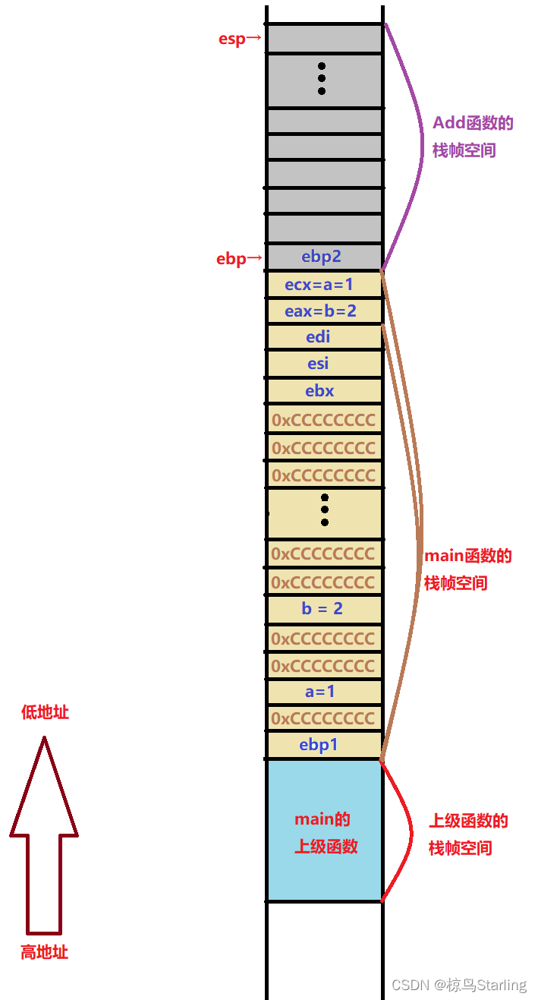

该系列为本人的学习笔记，主要由本人整理书写而成。部分内容来自教材、视频课程等，不能保证完全原创性。
萌新的学习笔记，写错了恳请斧正。
# 函数栈帧是什么
函数栈帧 (stack frame) 就是函数调用过程中在程序的调用栈 (call stack) 所开的空间，这些空间
是用来存放:
- 函数参数和函数返回值
- 临时变量 (括函数的非静态的局部变量以及编译器自动生产的其他临时变量)
- 保存上下文信息 (包括在函数调用前后需要保持不变的寄存器)
# 栈是什么
准确定义：栈是只允许在一端进行插入或删除操作的线性表。
可以理解为栈是一种特殊的容器，用户可以将数据压入栈中 (入栈，push), 也可以将已经压入栈中的数据弹出 (弹栈，pop), 但是栈这个容器必须遵守一条规则：先入栈的数据后出栈 (First in Last Out)。就像一摞书，从顶上一本一本放书，也从顶上一本一本取书。
在计算机系统中，栈则是一个具有以上属性的动态内存区域。程序可以将数据压入栈中，也可以将数据从栈顶弹出。压栈操作使得栈增大，而弹出操作使得栈减小。
栈是非常非常非常重要的一个概念，可以说基本上所有的程序都使用了栈，我们看到的一切函数实现都基于栈。
# 栈的性质
在大多数操作系统中，栈都是从高地址向低地址延伸的。(也就是说后压入的数据地址更低)
在 x86-32 和 x86-64 下栈顶由寄存器 esp 来定位。
弹栈并不是把栈顶的数据删除，而是直接将栈顶指针 (esp) 回退一位。数据还在，但是没有意义了，下一个压入的数据会将其覆盖。(就像光标后移，也就是退格一样)
# 一些寄存器与汇编指令
# 寄存器
- eax: 通用寄存器，保留临时数据，常用于返回值
- ebx: 通用寄存器，保留临时数据
- ebp: 栈底寄存器
- esp: 栈顶寄存器
- eip: 指令寄存器，保存下一条指令的地址，便于调用函数后返回原址
# 汇编指令
- mov: 数据转移。mov a, b 就是把 b 的值赋给 a
- lea: 取有效地址。可以理解为专门传送地址的 mov
- push: 数据入栈。在栈顶上方加入数据，并移动栈顶指针
- pop: 数据出栈。移动栈顶指针
- sub: 减法指令。sub a, b 就是把 b 减到 a 中
- add: 加法指令。add a, b 就是把 b 加到 a 中
- call: 函数调用指令。先压栈返回地址，再转入目标函数
- jump: 修改 eip 来转入目标函数
- ret: 恢复返回地址，压入 eip
# 函数栈帧的创建与销毁
# 前置知识
每一次函数调用，都要为本次函数调用开辟空间，即函数栈帧空间。
这块空间由 esp 与 ebp 两个寄存器来维护
其中 esp 记录栈顶的位置，ebp 记录栈底的位置
函数栈帧的实现方式在不同编译器上有所不同，但大体一致
# 函数的调用堆栈
在 Visual Studio 中，我们调试进入函数后可以打开函数的调用堆栈窗口，可以看到函数正在被哪个函数调用。在勾选显示外部代码后，我们可以发现其实主函数也是被其他函数调用的。这些函数都会开辟自己的栈帧空间。
# 准备环境
为了更好的观察函数栈帧，我们可以在项目的属性页中打开 C/C++ 常规选项卡，把 “支持仅我的代码调试” 改为 “否”(Visual Studio)
# 反汇编
在调试时，我们可以右键鼠标，点击 “转到反汇编”, 就能看到编译器在编译我们的代码时具体是如何用汇编实现的。
int main() | |
{ | |
// 函数栈帧的创建 | |
010C1410 push ebp | |
010C1411 mov ebp,esp | |
010C1413 sub esp,0E4h | |
010C1419 push ebx | |
010C141A push esi | |
010C141B push edi | |
010C141C lea edi,[ebp+FFFFFF1Ch] | |
010C1422 mov ecx,39h | |
010C1427 mov eax,0CCCCCCCCh | |
010C142C rep stos dword ptr es:[edi] | |
//main 函数主体 | |
int a = 1; | |
010C142E mov dword ptr [ebp-8],1 | |
int b = 2; | |
010C1435 mov dword ptr [ebp-14h],2 | |
int c = Add(a, b); | |
010C143C mov eax,dword ptr [ebp-14h] | |
010C143F push eax | |
010C1440 mov ecx,dword ptr [ebp-8] | |
010C1443 push ecx | |
010C1444 call 010C10E1 | |
010C1449 add esp,8 | |
010C144C mov dword ptr [ebp-20h],eax | |
printf("%d", c); | |
010C144F mov esi,esp | |
010C1451 mov eax,dword ptr [ebp-20h] | |
010C1454 push eax | |
010C1455 push 10C5858h | |
010C145A call dword ptr ds:[010C9114h] | |
010C1460 add esp,8 | |
010C1463 cmp esi,esp | |
010C1465 call 010C113B | |
return 0; | |
010C146A xor eax,eax | |
} |
# 函数栈帧的创建
上面就是 main 函数的反汇编代码，下面我们具体理解一下:
首先，在 main 函数被调用前，栈空间如图:
010C1410 push ebp
第一步把 ebp 寄存器中的值进行压栈，也就是在栈顶压入此时 ebp 的值，同时上移栈顶指针 esp
注意，是此时，ebp 指针会变的。这里只是保存原先 ebp 的位置，便于 main 函数结束后还能正常回到上级函数。
现在栈空间如图:
010C1411 mov ebp,esp
然后把 esp 的值赋值给 ebp, 所以现在 ebp 储存的地址就也变成了 esp 储存的地址
也就是说，ebp 指向的位置和 esp 一致了，变成如下情况:
这时也就看出上一步压栈的作用了，不保存一下 ebp 的位置马上回不去上级函数了
010C1413 sub esp,0E4h
然后将 esp 的值减去 0E4h (十进制为 228, 记住这个数字！), 也就是再把栈顶指向的位置上移 228 位 (因为栈区内存从高地址向低地址演示，所以地址减去一个值其实是上移), 而这样在 esp 与 ebp 之间空出的位置就是为主函数开辟的栈帧空间 (具体开辟多少得看编译器和环境), 这篇区域将存储 main 函数中的临时变量等。如图:
010C13C9 push ebx | |
010C13CA push esi | |
010C13CB push edi |
随后我们连续压入了 3 个值，分别是 ebx、esi、edi 三个寄存器的值。这一步操作功能与上面保存 ebp 的值的意义一致，因为这三个寄存器在函数调用过程中可能会变化， 为了便于调用完函数时返回一开始的状态，就先保存一下。
此时栈空间如图:
010C141C lea edi,[ebp+FFFFFF1Ch] | |
010C1422 mov ecx,39h | |
010C1427 mov eax,0CCCCCCCCh | |
010C142C rep stos dword ptr es:[edi] |
这四句代码就比较难以理解了。
第一句是把 ebp+FFFFFF1Ch (ebp-0E4h, 这个数字是不是很熟悉？马上会剖析这里) 的地址放入 edi 中 (看，edi 变了，所以上一步保存 edi 是有必要的)
然后将 39h (十进制 57) 赋值给 ecx, 将 0CCCCCCCCh 赋值给 eax。
最后这一句代码只需要理解意思就行，就是把从 ebp 到 edi 之间按顺序排 ecx 个的内存 dword (32 位 2 进制，就是 8 位 16 进制，对应 4 个字节) 初始化为 16 进制的 CCCCCCCC (不同编译器可能初始化的不一样)。
而 0E4h 正是之前创建栈帧空间是栈顶指针的偏移量，也就是栈帧空间中可用区域的大小
同时 57*4 就等于 228, 其实这里就是初始化了栈帧空间中的所有区域
四句连起来就是把 main 函数栈帧空间可用区域所有内存位置初始化为 0xCCCCCCCC
那么现在的栈空间如图:
至此，函数栈帧就完成了创建。
# 关于 “烫烫烫”
网络上我们可能看到 “锟斤拷”、“烫烫烫” 的梗，用来描述乱码。
而当我们写一个字符数组却忘记在结尾加上‘\0’时，如果我们打印这个数组便会看到一堆烫烫烫，这是为什么呢。
因为 0xCC 对应的汉字编码就是烫，而当打印数组没有读取到字符串结束标志时，就会一直读下去直到遇到一个‘\0’, 而中途会读取到很多初始化了却还没有被使用的内存空间 (值为 0xCCCCCCCC), 所以就会输出 “烫”。
# 变量的创建与初始化
下面我们继续来看看主函数的核心代码，首先是局部变量创建的部分:
int a = 1; | |
010C142E mov dword ptr [ebp-8],1 | |
int b = 2; | |
010C1435 mov dword ptr [ebp-14h],2 |
首先是把 1 放到了 ebp-8 的位置，2 放在了 ebp-14h 的位置
很显然 ebp-8,ebp-14h (ebp-20) 就是函数用来存放局部变量 a 和 b 的地方
可以发现 ebp-8 就是栈底指针上方第二个内存位置 (每个内存地址对应 4 字节)
而 b 与 a 间隔两个内存位置 (如果再创建 c 也将与 b 间隔 2 个位置)
具体间隔多少取决于编译器的实现，并不统一
同时，我们能看出创建变量同时进行初始化的重要性。如果不初始化，其值是一个随机值 (初始化函数栈帧时的值，这里是 0xCCCCCCCC)
# 函数的调用与传参
接下来就是调用 Add 函数了
int c = Add(a, b); | |
010C143C mov eax,dword ptr [ebp-14h] | |
010C143F push eax | |
010C1440 mov ecx,dword ptr [ebp-8] | |
010C1443 push ecx |
首先，编译器把 ebp-14h (变量 b) 的值赋给了 eax 寄存器，eax 压栈
同样的，把 ebp-8 (变量 a) 的值赋给了 ecx 寄存器，ecx 压栈
其实啊，这两步就是创建形参的过程。我们调用函数时传递过去的其实就是刚刚压栈的 eax 与 ecx, 而不是 a 和 b 本身。这就是为什么说形参是实参的一份临时拷贝 (后面 Add 函数栈帧销毁时会舍弃这部分形参的内存空间所以是 “临时”)
下面，重要的一步来了:
010C1444 call 010C10E1
这就是正式开始调用函数了，内存跳转到 010C10E1 (以此为例)
而这个位置是编译器存放进入 Add 函数的指令的地方:
_Add: | |
010C10E1 jmp 010C13C0 |
跳转到这里我们发现我们需要进一步前往 010C13C0 (以此为例)
而 010C13C0 就是我本次编译时 Add 函数指令的位置
先不急着看 Add 函数内部的情况。
我们先跳过 add 函数，主函数调用 add 函数后还有两条指令:
010C1449 add esp,8 | |
010C144C mov dword ptr [ebp-20h],eax |
先是栈顶指针 esp 加 8, 也就是后退两位，这正好把之前放置形参 ab 的两个位置丢了出去 (也就相当于连续两次 pop)(注意栈中删除东西不是真的删除，只要使这个元素在栈指针外面即可，这样这个数据就没有意义了，后面这个位置再写入其他数据也无所谓)
然后编译器将寄存器 eax (这里现在存着函数的返回值) 的值赋给了 ebp-20h 的位置 (局部变量 c 的位置)
至此，一次完整的函数调用就结束了。
# Add 函数 - 从创建函数栈帧到销毁
之前跳转过去的 Add 函数的反汇编代码如下:
int Add(int a, int b) | |
{ | |
010C13C0 push ebp | |
010C13C1 mov ebp,esp | |
010C13C3 sub esp,0CCh | |
010C13C9 push ebx | |
010C13CA push esi | |
010C13CB push edi | |
010C13CC lea edi,[ebp+FFFFFF34h] | |
010C13D2 mov ecx,33h | |
010C13D7 mov eax,0CCCCCCCCh | |
010C13DC rep stos dword ptr es:[edi] | |
int c = 0; | |
010C13DE mov dword ptr [ebp-8],0 | |
c = a + b; | |
010C13E5 mov eax,dword ptr [ebp+8] | |
010C13E8 add eax,dword ptr [ebp+0Ch] | |
010C13EB mov dword ptr [ebp-8],eax | |
return c; | |
010C13EE mov eax,dword ptr [ebp-8] | |
} | |
010C13F1 pop edi | |
010C13F2 pop esi | |
010C13F3 pop ebx | |
010C13F4 mov esp,ebp | |
010C13F6 pop ebp | |
010C13F7 ret |
前面依旧是和 main 函数一致的函数栈帧的创建与变量的初始化，不再重复一遍了
过程如图:


然后，就又到了我们需要关注的内容:
c = a + b; | |
010C13E5 mov eax,dword ptr [ebp+8] | |
010C13E8 add eax,dword ptr [ebp+0Ch] | |
010C13EB mov dword ptr [ebp-8],eax |
我们可以看到，编译器在这里是通过 ebp+8/ebp+0Ch 来回去找到 ab 的形参所在的位置的 (形参创建的位置在主调函数的末尾)
return c; | |
010C13EE mov eax,dword ptr [ebp-8] |
最终返回结果会被赋值给寄存器 eax 来带回主调函数。
最后，我们终于讲到了函数栈帧的销毁
010C13F1 pop edi | |
010C13F2 pop esi | |
010C13F3 pop ebx |
先是连续 3 次弹栈，分别存入 edi、esi、ebx
010C13F4 mov esp,ebp | |
010C13F6 pop ebp | |
010C13F7 ret |
然后将 esp 挪到 ebp 所指向位置 (相当于把整个 add 函数除了栈头全部弹掉)
如图:
再弹出 ebp2 将其存入 ebp (这样 ebp 就变回了原来维护主函数的 ebp, 因为当时这个值就被保存在了这里), 而 esp 因为弹栈也后退一格返回了原本维护主函数的 esp 的位置。
最终 ret 指令返回主调函数 call 的位置，并执行调用函数的收尾工作。
我们再看一眼栈区，就会发现和调用函数之前有意义的部分完全一致
变化的只有获得了返回值
# 扩展
返回对象是内置类型时，一般都是通过寄存器来带回返回值
返回对象如果是较大的对象时，一般会在主调函数的栈帧中开辟一块空间，然后把这块空间的地址，隐式传递给被调函数，在被调函数中通过地址找到主调函数中预留的空间，将返回值直接保存到主调函数
参考《程序员的自我修养》第 10 章
这一期画图画的好累好累～